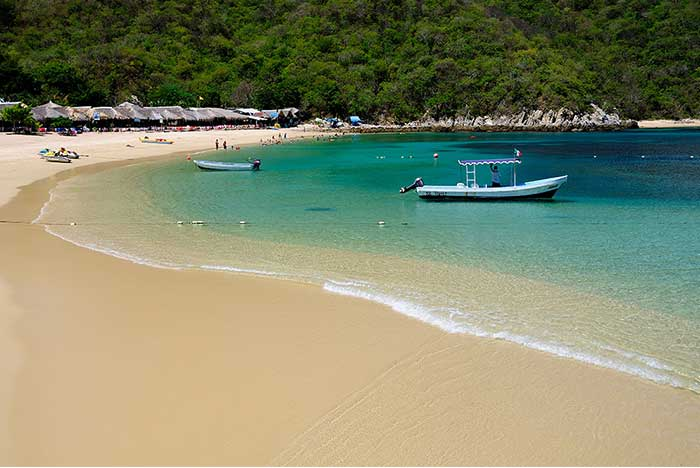
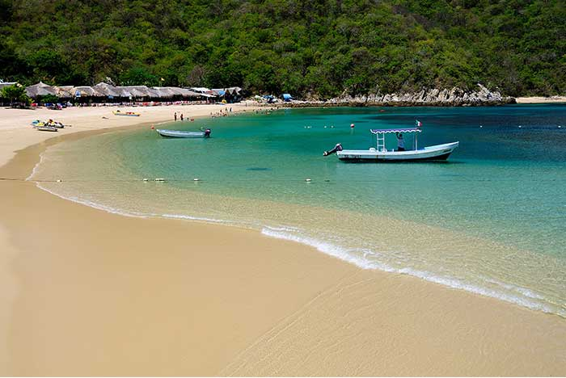
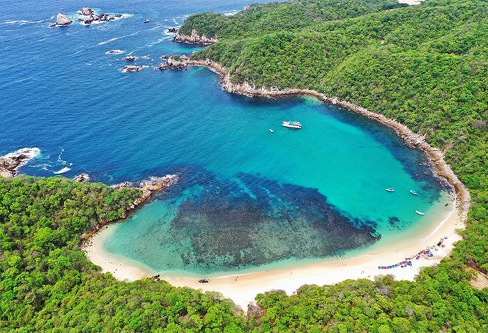
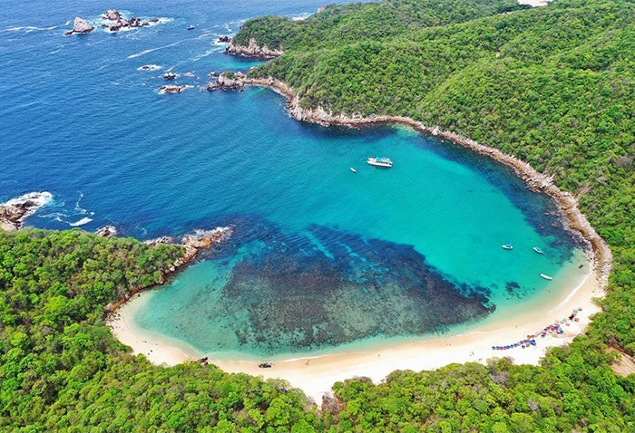
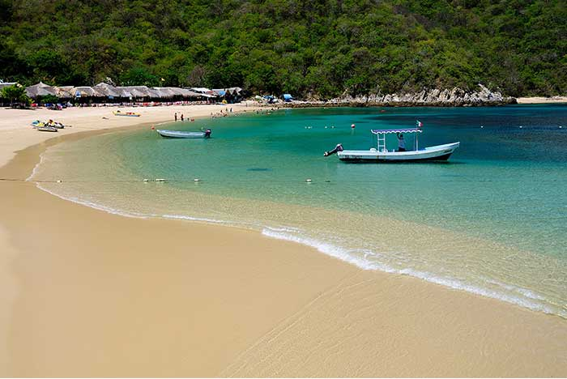
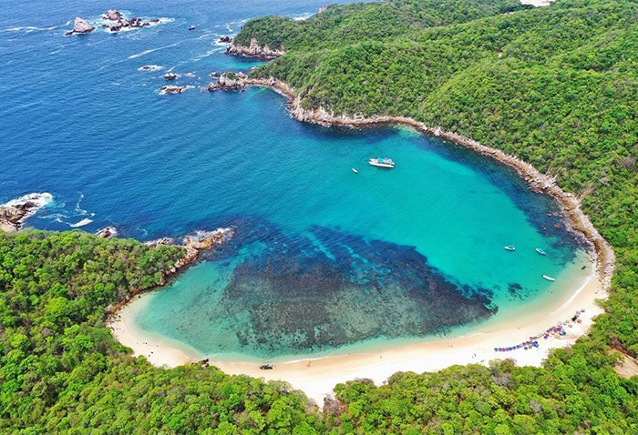

Galería de Playas


 



 



Huatulco es un destino paradisíaco que alberga 9 bahías y 32 playas, cada una con su propio encanto único. Desde aguas cristalinas ideales para nadar hasta arenas doradas perfectas para relajarse, este rincón del Pacífico mexicano es el lugar ideal para desconectar y reconectar con la naturaleza. Ven y déjate sorprender por su belleza serena, su biodiversidad y su riqueza cultural. ¡Huatulco te espera!

